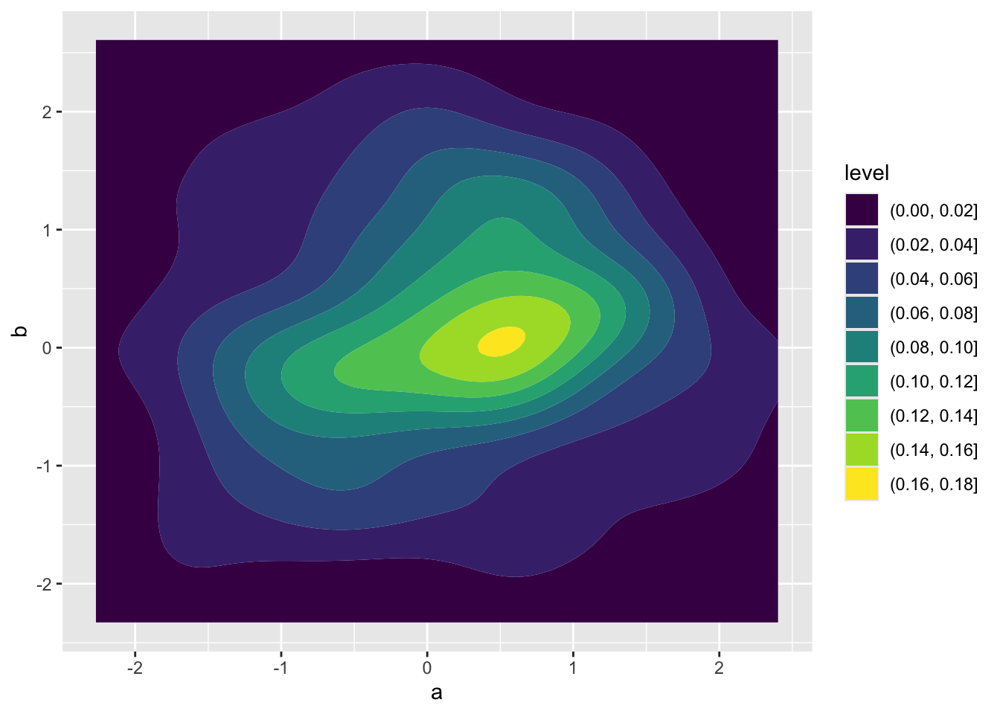

# load all necessary packages
library(ggplot2)
library(ggpointdensity)
library(dplyr)22 Building Poisson Generalized Linear Models
This lab will guide you through fitting Poisson GLMs, diagnosing collinearity with a bootstrap, and building your own models with carefully chosen predictors. You can download the template .qmd file for this lab here:
The template will prompt you to work through the following sections.
22.1 Fitting the species–area model and adding explanatory variables
In the lecture we used a Poisson GLM to model species richness as a function of plot area, human impact, and temperature. We’ll start there.
22.1.1 Data preparation
As always, we load the three data files and prep the data for analysis by joining and using the split-apply-combine workflow. This time we will explicitly walk through those steps.
# read-in data
tree <- read.csv("https://raw.githubusercontent.com/uhm-biostats/stat-mod/refs/heads/main/data/OpenNahele_Tree_Data.csv")
clim <- read.csv("https://raw.githubusercontent.com/uhm-biostats/stat-mod/refs/heads/main/data/plot_climate.csv")
hii_geo <- read.csv("https://raw.githubusercontent.com/uhm-biostats/stat-mod/refs/heads/main/data/hii_geo.csv")Our goal with joining and split-apply-combine is to make data object called dat_plt where each row is one survey plot and the columns have all the variables we need: Plot_Area, nspp (number of unique species per plot), hii, and avg_temp_annual_c. We also want to exclude the two very large outlier plots because they are multiple oders of magnitude larger than anything else, and even on a log scale they will bias our models.
# join all data ***at tree level*** (i.e. rows = trees),
# refer back to r refresher for why we do `!(lon:lat)`
all_dat <- left_join(tree, clim, by = "PlotID") |>
left_join(dplyr::select(hii_geo, !(lon:lat)),
by = "PlotID")
# split-apply-combine
dat_plt <- group_by(all_dat, PlotID) |>
# `across` gives us all the variables, while `first` gives us
# just the first value for each because values repeat across
# rows within plots
summarize(across(c(Island, Plot_Area, lon:elev_m), first),
# caculate number of species per plot
nspp = n_distinct(Scientific_name)) |>
ungroup() |>
# remove super large plots
filter(Plot_Area < 10000)
# have a look (technically a tibble)
head(dat_plt)# A tibble: 6 × 15
PlotID Island Plot_Area lon lat evapotrans_annual_mm
<int> <chr> <dbl> <dbl> <dbl> <dbl>
1 1 O'ahu Island (incl. Mokoli'… 1000 -158. 21.4 818.
2 2 Hawai'i Island 1018. -155. 19.4 934.
3 3 Hawai'i Island 1018. -155. 19.4 934.
4 4 Hawai'i Island 1018. -155. 19.4 934.
5 5 Hawai'i Island 1018. -155. 19.4 934.
6 6 Hawai'i Island 1018. -155. 19.4 934.
# ℹ 9 more variables: avbl_energy_annual_wm2 <dbl>, cloud_freq_annual <dbl>,
# ndvi_annual <dbl>, rain_annual_mm <dbl>, avg_temp_annual_c <dbl>,
# hii <dbl>, age_yr <dbl>, elev_m <dbl>, nspp <int>Note: when making this final data object, we kept all the columns. That’s because it doesn’t hurt anything to keep them all (even if you don’t use them all) and at the end of this lab you will try out several different possible explanatory variables.
22.1.2 Fitting the model
Use glm to fit the model nspp ~ log(Plot_Area) + hii + avg_temp_annual_c
But we know this model is problematic because of collinearity! We went ahead and made this model so we can better understand the impact of collinearity, which we do starting right now in the next section.
22.2 Bootstrapping to diagnose collinearity
Colinearity produces likelihood surface for the slopes of hii and avg_temp_annual_c that has long flat ridge. The ridge tells us there are many combinations of those two slopes that fit the data almost equally well, which means the estimated slopes are unstable: small changes in the data lead to very different estimates.
The bootstrap is a technique for demonstrating exactly this kind of instability. The idea is simple: we treat our observed data set as a stand-in for the entire, hypothetically infinite population that in reality we would never be able to collect data on in its entirety. We then simulate “new” data sets by sampling rows from our data with replacement. Because sampling with replacement allows some rows to appear more than once and others not at all, each resampled data set is slightly different from the original and from all other resampled data sets (technically there is a finite limit to the number of unique bootstrapped data sets, but practically we will never reach it). We then re-fit the model to each resampled data set and record the resulting parameter estimates. If the parameter estimates are stable across these resampled fits, we can trust them. If they bounce around wildly, that tells us the estimates are unreliable—exactly what we expect from collinearity.
Bootstrapping can be implemented with a for loop! We’ve covered for loops in the lab on simulating data and the lab on the normal likelihood.
Refer back to those labs and then return here where we’ll build up our bootstrap.
We can sample row indices with replacement and use them to build resampled data frames:
# sample all row indices with replacement
row_idx <- sample(nrow(dat_plt), replace = TRUE)
# resampl data and store as new data object
dat_boot <- dat_plt[row_idx, ]We can wrap that inside a for loop to repeat the process many times and collect the coefficients from each resampled fit. We will want to save the slope for hii and the slope for avg_temp_annual_c from each iteration—so we need two vectors to store the bootstrap estimates, one for each slope.
# note: this code chunk is not getting evaluate because it has
# "pseudo code". update it with your own code and then change
# `#| eval: false` to `#| eval: true`
# number of bootstrap replicates
n_boot <- 500
# vectors to hold boostrapped estimates of slops
boot_hii <- numeric(n_boot)
boot_temp <- numeric(n_boot)
# run the bootstrap itself
for(i in 1:n_boot) {
# resample rows with replacement
# ... your code here ...
# refit the model
# ... your code here ...
# it will look something like
mod_boot <- glm(nspp ~ log(Plot_Area) + hii + avg_temp_annual_c,
data = <resamapled data>, # <--- resampled data here
family = poisson)
# save the slopes
# ... your code here ...
# use the `coefficients` function to get slope estimates for
# `hii` and `avg_temp_annual_c`
boot_hii[i] <- <slope for hii>
boot_temp[i] <- <slope for avg_temp_annual_c>
}Now we can visualize the joint distribution of the two bootstrapped slopes. The joint distribution should show us a similar picture to the likelihood surface: a trade-off in the different combinations of values for the two slopes.
To visualize a joint distribution we can use geom_density_2d_filled. Here’s how that works
# independent normal random variables
demo <- data.frame(a = rnorm(100),
b = rnorm(100))
ggplot(demo, aes(a, b)) +
geom_density_2d_filled()
Take that same approach using geom_density_2d_filled but apply it to the results of your bootstrap. You’ll need to make a data object for your bootstrap results, something like boot <- data.frame(hii = boot_hii, temp = boot_temp). Your visualize will not look like the one above for independent random variables. The trade-off we expect in the slopes for human impact and temperature leads to non-independence of their estimates.
Once you’ve made your plot, in your own words, describe what you observe about these bootstrapped parameter estimates and how they might be unstable.
22.3 Building your own model
Now we will use what we learned about collinearity to build a better Poisson GLM. The goal is to find a set of explanatory variables that are interesting—that you can form a meaningful hypothesis about—but that aren’t too highly correlated with each other (\(-0.6 < r < 0.6\)), then build a new model with them.
22.3.1 Checking for collinearity
Have a look at all the columns in your dat_plt object:
names(dat_plt) [1] "PlotID" "Island" "Plot_Area"
[4] "lon" "lat" "evapotrans_annual_mm"
[7] "avbl_energy_annual_wm2" "cloud_freq_annual" "ndvi_annual"
[10] "rain_annual_mm" "avg_temp_annual_c" "hii"
[13] "age_yr" "elev_m" "nspp" Pick two variables that you are interested in as potential explanatory variables of species richness. Compute pairwise Spearman correlations among them using cor, specifying method = "spearman". A Spearman correlation is robust to skewed distributions (the kind you often get with ecological data).
If your candidate variables are too correlated, choose one to keep and find another possible explanatory variable. Repeat the correlation check and keep going until you have two explanatory variables that are sufficiently uncorrelated. Keep track of all your code testing for collinearity.
22.3.2 Fitting your model
Now fit the model nspp ~ log(Plot_Area) + <your-var-1> + <your-var-2> with glm and have a look at the coefficients with coefficients. Do the signs of the slopes match your predictions for the effects of those variables on species richness?
22.3.3 Visualizing the data
For each predictor in your new model (other than log(Plot_Area)), make a scatter plot of nspp against that predictor.